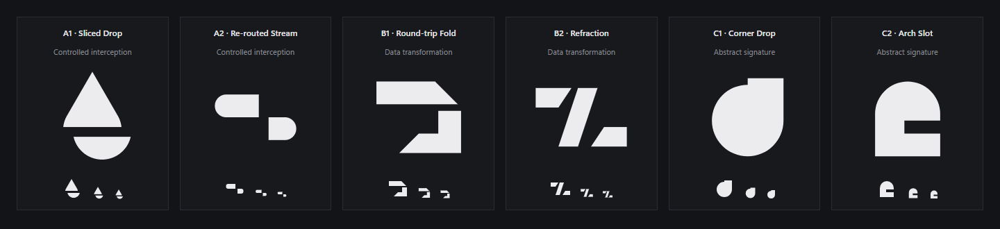
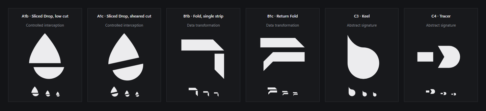
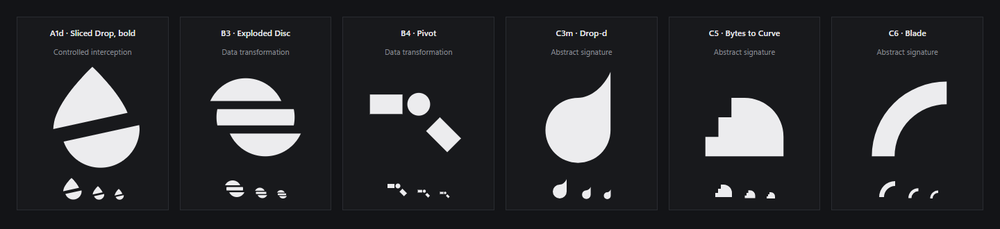
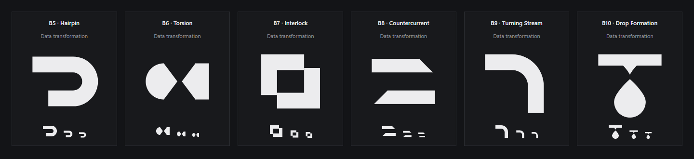

Three finalists, refined from 24 sketches across four passes (the full exploration and every rejection are below the comparison). Each mark is one real SVG on a 64-unit grid, monochrome first, rendered by the browser at true size. Production branding is unchanged.
Master, monochrome, 256 px
Symbol + DropSuite wordmark (Segoe UI Variable Display 600, −0.02 em), dark and light
Application header (18 px symbol, 14 px wordmark)
16 · 20 · 24 · 32 · 64 px on dark, then the 16 and 20 px rasters enlarged ×6
16 · 20 · 24 · 32 · 64 px on light
Windows: desktop icon 48 px, taskbar 24 px on dark and light
Critical review (1 to 5; a 3 means it does the job without distinction)
Exploration: 24 sketches, 4 passes
Six concepts per pass across the three territories, each judged at 150 px and at 32, 20 and 16 px. The rejection reason is listed for every sketch that did not advance.

Pass 1. Sliced Drop: promising, but the cut fell at the tangent and read as a triangle over a bowl. Re-routed Stream: a toggle or route icon. Round-trip Fold: did not read as a fold. Refraction: reads as Z. Corner Drop: a circle plus a corner, assembled from primitives, and reads as a speech bubble. Arch Slot: reads as a lowercase e.

Pass 2. Sliced Drop with the low cut and the sheared cut: the drop now reads, and the sheared cut adds tension, so it advanced. Fold variants: collapse into 7 and F. Keel: reads as a lowercase b (mirrored, it became Drop-d). Tracer: an arrow.

Pass 3. Bold sliced drop: the strongest sketch, became A. Exploded Disc: another slice, and striped circles are common. Pivot: an icon-library route icon. Drop-d: distinctive but soft, became C. Bytes to Curve: the steps read as pixel art. Blade: a stock quarter-ring.

Pass 4, Territory B only. Hairpin: the one bold, legible transformation form, became B. Torsion: a bow-tie or fish. Interlock: the stock "duplicate" icon. Countercurrent: reads as "=". Turning Stream: a pipe elbow. Drop Formation: a dripping tap.
Limits of this review
The similarity check combined visual knowledge of well-known technology marks, a direct look at Lighter's published mark (two vertical slabs with 45° ends, which none of these candidates shares in construction, angle or arrangement), and text web searches for drop, letter-in-drop and hairpin logos. It did not include a reverse image search, a logo-database sweep or a trademark registry search. Nothing here is a clearance or a guarantee of uniqueness; the chosen mark needs a formal trademark search before it ships.